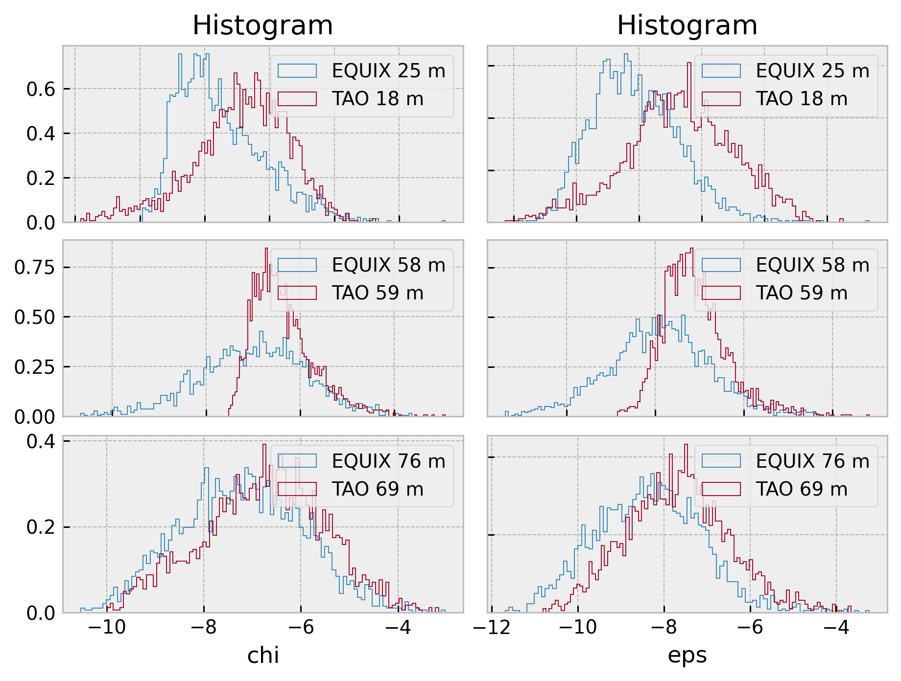
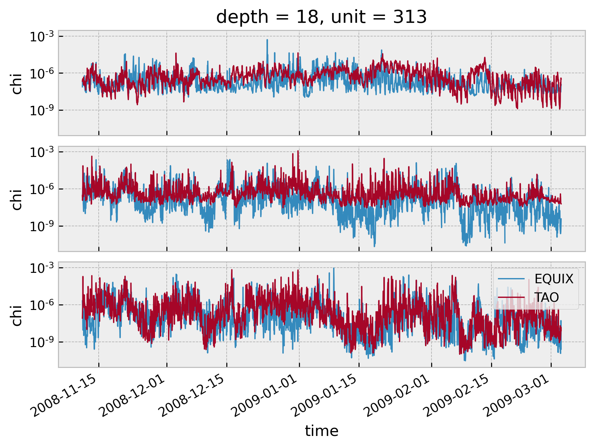

χpods: EQUIX vs TAO¶
import cf_xarray
import dcpy
import eddydiff
import distributed
import matplotlib as mpl
import matplotlib.pyplot as plt
import numpy as np
import pandas as pd
import pump
import xarray as xr
import eddydiff as ed
xr.set_options(keep_attrs=True)
plt.style.use("bmh")
plt.rcParams["figure.dpi"] = 140
plt.rcParams["savefig.dpi"] = 200
eop = xr.open_dataset(
"/home/deepak/datasets/microstructure/osu/equix/hourly_eop.nc"
).rename({"dTdz": "Tz"})
eop["salt"] = 35 * xr.ones_like(eop.theta)
eop["salt"].attrs = {"standard_name": "sea_water_salinity"}
eop["T"] = dcpy.eos.temp(eop.salt, eop.theta, eop.depth)
eop.coords["pres"] = dcpy.eos.pres(eop.depth, 0)
eop.coords["latitude"] = 0
eop.coords["longitude"] = -140
# eop["gamma_n"] = dcpy.oceans.neutral_density(eop)
# eop["pden"] = dcpy.eos.pden(eop.salt, eop.theta, 0)
eop.attrs["name"] = "EQUIX"
tao = xr.open_dataset("/home/deepak/datasets/microstructure/osu/equix/hourly_tao.nc")
tao.attrs["name"] = "TAO"
tao_eop = dcpy.util.slice_like(tao, eop.time).drop_sel(depth=[39, 84])
tao_eop
<xarray.Dataset>
Dimensions: (depth: 5, time: 2692)
Coordinates:
* time (time) datetime64[ns] 2008-11-11T05:00:00 ... 2009-03-03T08:00:00
* depth (depth) int64 18 59 69 124 150
unit (depth) int64 313 325 319 327 321
Data variables:
theta (time, depth) float64 24.77 22.59 23.06 17.55 ... 23.33 18.66 15.89
chi (time, depth) float64 2.222e-07 3.024e-07 ... 2.655e-08 2.5e-07
eps (time, depth) float64 4.368e-07 5.899e-08 ... 3.465e-09 7.051e-09
Kt (time, depth) float64 0.008625 0.0001353 ... 6.772e-06 3.797e-06
Jq (time, depth) float64 98.86 17.36 1.291 ... 0.2414 1.153 2.633
dTdz (time, depth) float64 0.008565 0.03904 0.132 ... 0.06073 0.2235
Attributes:
name: TAOxarray.Dataset
- depth: 5
- time: 2692
- time(time)datetime64[ns]2008-11-11T05:00:00 ... 2009-03-...
array(['2008-11-11T05:00:00.000000000', '2008-11-11T06:00:00.000000000', '2008-11-11T07:00:00.000000000', ..., '2009-03-03T06:00:00.000000000', '2009-03-03T07:00:00.000000000', '2009-03-03T08:00:00.000000000'], dtype='datetime64[ns]') - depth(depth)int6418 59 69 124 150
- positive :
- down
array([ 18, 59, 69, 124, 150])
- unit(depth)int64...
array([313, 325, 319, 327, 321])
- theta(time, depth)float64...
array([[24.767174, 22.585433, 23.060589, 17.546874, 16.35305 ], [24.716913, 22.373057, 22.395389, 17.305241, 16.285188], [24.6885 , 21.856827, 21.873538, 16.894652, 16.038219], ..., [25.6026 , 22.836463, 23.165503, 18.12849 , 15.148177], [25.5889 , 22.822332, 23.191654, 18.55093 , 16.009488], [25.558725, 22.880254, 23.325016, 18.655506, 15.890522]]) - chi(time, depth)float64...
array([[2.221969e-07, 3.023977e-07, 8.305901e-08, 3.251083e-08, 1.558388e-10], [2.904619e-07, 1.189111e-07, 2.265212e-07, 1.904703e-08, 1.283882e-09], [3.455996e-07, 1.867878e-07, 8.724490e-07, 3.290743e-08, 9.838162e-10], ..., [9.793530e-08, 7.135890e-08, 4.410596e-09, 2.936267e-08, 2.440922e-09], [3.963241e-07, 6.234969e-08, 1.536550e-08, 2.095885e-08, 1.013335e-08], [3.276588e-07, 6.243855e-08, 8.130752e-09, 2.655074e-08, 2.499682e-07]]) - eps(time, depth)float64...
array([[4.368195e-07, 5.899058e-08, 4.393372e-09, 6.639094e-09, 1.464739e-10], [5.247166e-07, 1.080023e-08, 1.444967e-08, 1.560048e-09, 3.624265e-10], [6.524705e-07, 9.579711e-09, 4.903415e-08, 3.061258e-08, 7.455676e-11], ..., [8.284832e-08, 7.972778e-09, 3.418991e-10, 1.759471e-09, 1.162570e-10], [3.298186e-07, 8.235587e-09, 1.226856e-09, 2.303912e-09, 2.971531e-10], [3.008279e-07, 9.506263e-09, 8.304910e-10, 3.464674e-09, 7.050504e-09]]) - Kt(time, depth)float64...
array([[8.624718e-03, 1.352626e-04, 2.451020e-06, 2.389572e-05, 2.692938e-06], [8.159076e-03, 1.092199e-05, 1.008868e-05, 2.522997e-06, 1.048933e-05], [1.184721e-02, 5.566223e-06, 3.229397e-05, 5.671000e-04, 9.439268e-08], ..., [1.142252e-03, 1.055503e-05, 2.824136e-07, 1.586245e-06, 2.798425e-07], [2.650025e-03, 1.162695e-05, 1.098780e-06, 4.697220e-06, 3.285929e-07], [2.515145e-03, 1.533443e-05, 1.347329e-06, 6.771791e-06, 3.796614e-06]]) - Jq(time, depth)float64...
array([[9.885880e+01, 1.736438e+01, 1.291102e+00, 2.054970e+00, 5.004753e-02], [1.210999e+02, 3.241354e+00, 4.325269e+00, 5.422464e-01, 1.303784e-01], [1.583552e+02, 2.927622e+00, 1.516170e+01, 7.835868e+00, 2.737493e-02], ..., [2.020398e+01, 2.363841e+00, 1.009923e-01, 5.954683e-01, 4.500601e-02], [8.216183e+01, 2.445831e+00, 3.565169e-01, 7.555388e-01, 1.092983e-01], [6.144140e+01, 2.817412e+00, 2.414415e-01, 1.153494e+00, 2.632635e+00]]) - dTdz(time, depth)float64...
array([[0.008565, 0.039039, 0.131977, 0.051939, 0.011567], [0.006654, 0.078765, 0.107145, 0.104758, 0.038627], [0.005194, 0.126954, 0.104955, 0.068825, 0.074018], ..., [0.018348, 0.068067, 0.088736, 0.115041, 0.081161], [0.012399, 0.053263, 0.083526, 0.103984, 0.158688], [0.013175, 0.046191, 0.082852, 0.060728, 0.223501]])
- name :
- TAO
χ, ε distributions¶
TAO 59m looks weird
fg = dcpy.facetgrid.facetgrid([0, 1, 2], ["chi", "eps"], sharex=False, sharey=False)
for ds in [eop.sel(depth=[25, 58, 76]), tao_eop.sel(depth=[18, 59, 69])]:
for idx, _ in enumerate(ds.depth):
for var in fg.col_locs:
np.log10(ds[var].isel(depth=idx)).plot.hist(
ax=fg.axes_dict[idx][var],
bins=100,
histtype="step",
label=f"{ds.attrs['name']} {ds.depth[idx].values} m",
density=True
)
for ax in fg.axes.flat:
ax.legend()
dcpy.plots.clean_axes(fg.axes)

Time series¶
f, ax = plt.subplots(3, 1, squeeze=False, sharex=True, sharey=True, constrained_layout=True)
for axis, depth in zip(ax.flat, [25, 58, 75]):
kwargs = dict(yscale="log", x="time", lw=1, ax=axis)
eop.sel(depth=depth, method="nearest").chi.plot(**kwargs)
tao_eop.sel(depth=depth, method="nearest").chi.plot(**kwargs)
plt.legend(["EQUIX", "TAO"])
dcpy.plots.clean_axes(ax)

Time means¶
kwargs = dict(xscale="log", marker='o', ls="none", y="depth")
eop.chi.mean("time").cf.plot(**kwargs)
tao_eop.chi.mean("time").cf.plot(**kwargs)
[<matplotlib.lines.Line2D at 0x7f96051a83d0>]
Compared with the surrounding points, it looks like EQUIX 47m is too low? Here’s a 12H average of 47m, 49m
eop.chi.sel(depth=[47, 49]).resample(time="6H").mean().plot.line(
hue="depth", yscale="log", lw=1, size=8, aspect=1.6
)
[<matplotlib.lines.Line2D at 0x7f9606593df0>,
<matplotlib.lines.Line2D at 0x7f96065b4790>]
pcolor plots¶
tao_eop.chi.cf.plot(robust=True, norm=mpl.colors.LogNorm(1e-9, 1e-5), cmap=mpl.cm.Blues)
<matplotlib.collections.QuadMesh at 0x7f96143f6c70>
eop.chi.cf.plot(robust=True, norm=mpl.colors.LogNorm(1e-9, 1e-5), cmap=mpl.cm.Blues)
<matplotlib.collections.QuadMesh at 0x7f961571cd00>
TAO Data availability¶
tao.chi.cf.plot(robust=True, norm=mpl.colors.LogNorm())
plt.figure()
tao_eop.chi.cf.plot(robust=True, norm=mpl.colors.LogNorm())
<matplotlib.collections.QuadMesh at 0x7f96145505e0>